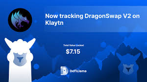

DeFiLlama's Shadowy Swamp: Navigating the Regulatory Murk of Decentralized Swaps
Remember that time I tried to bake a cake from scratch following Swap DefiLlama YouTube tutorial? Complete disaster. Turns out, leaving out the baking powder isn't just a minor oversight – it fundamentally alters the outcome. Similarly, the world of decentralized finance (DeFi), particularly with platforms like DeFiLlama tracking the sprawling swap ecosystem, faces its own recipe for disaster if regulatory oversight is haphazardly applied. And believe me, it's a recipe with a whole lot of baking powder still missing.
DeFiLlama, for those unfamiliar, is essentially a Google for DeFi. It aggregates data from various decentralized exchanges (DEXs), showcasing trading volumes, liquidity pools, and the general pulse of this rapidly evolving space. But the beauty of its decentralized nature – its strength – also presents a huge regulatory challenge. How do you regulate something that, by definition, exists outside traditional financial structures? It's like trying to herd cats, only the cats are also coding ninjas and each one speaks a slightly different dialect of smart contract.
The immediate reaction might be: "Crack down! Regulate everything!" But that's like trying to swat a swarm of mosquitos with a butterfly net – you'll catch a few, sure, but the vast majority will simply flit away to a different, equally annoying locale. The decentralized, permissionless nature of DeFi makes blanket regulation inherently difficult. A DEX could simply migrate to a jurisdiction with laxer rules – the "regulatory arbitrage" is built right into the system. So, are we chasing shadows?
The real challenge lies in finding a balance. We need regulation to protect consumers from scams and predatory practices – think of the rug pulls that have wiped out millions. But over-regulation could stifle innovation, pushing DeFi back into the dark corners of the internet, where it might truly become a haven for nefarious activities. Isn't that ironic? We’re trying to prevent the bad actors from taking over by potentially making it harder for the good actors to thrive.
This isn’t about choosing between “Wild West” chaos and stifling bureaucracy. It's about crafting a nuanced approach – perhaps a collaborative one involving regulators, developers, and the DeFi community itself. Think of it as a community baking that cake together, with everyone chipping in and learning from their mistakes, instead of one person trying to follow a flawed recipe.
Moreover, the very nature of DeFiLlama – as an aggregator rather than a direct participant in trades – complicates matters further. Is it responsible for the actions of the DEXs it tracks? That's a legal gray area, a delicious swamp of ambiguity that lawyers will spend years dissecting. I, for one, wouldn't want to be the one to figure it out.
So, where do we go from here? I honestly don't have all the answers. This article started as an exploration of a complex problem, and honestly, it's left me with more questions than answers. But what I do know is that a thoughtful, collaborative approach, one that prioritizes consumer protection while fostering innovation, is crucial. Otherwise, that DeFi cake… well, it's going to be a disaster. And trust me, nobody wants a disastrous DeFi cake.

Decentralization: DeFiLlama's Secret Weapon Against the Regulatory Kraken?
Okay, let's be honest. The world of decentralized finance (DeFi) feels a bit like that scene in The Matrix where Neo’s dodging bullets – exhilarating, chaotic, and frankly, a little terrifying. Regulations are those bullets, and they're whizzing closer every day. So, how do we, as players in this wild west, stay alive? I’ve been thinking a lot about DeFiLlama lately, and their approach to decentralization, and it struck me: could decentralization itself be DeFiLlama's surprisingly effective shield against the regulatory kraken?
DeFiLlama, for the uninitiated (and if you are, welcome!), is essentially a comprehensive tracker for the DeFi space. It’s like a massive, constantly updating spreadsheet showing all the juicy details of the various protocols. Think of it as the go-to resource for anyone wanting a bird's-eye view of the DeFi ecosystem. Now, that’s a pretty powerful position to be in, especially given the increasing regulatory scrutiny. A central authority holding that kind of data is a juicy target. Think of it as a giant neon sign flashing: "REGULATE ME!"
But here’s the twist. DeFiLlama, while undeniably impactful, is also pushing towards decentralization. Now, I know what you might be thinking: “Decentralization? Doesn’t that make things less efficient? Harder to manage?” And yeah, you’re right, to a certain extent. It’s not like suddenly everything will be perfectly smooth sailing. Implementing it is like herding cats that also happen to be writing complex smart contracts. But the potential long-term benefits are pretty compelling.
The main point here is that decentralization, in theory, makes it significantly harder for any single entity – be it a government or a malicious actor – to exert control or shut down the project. Imagine trying to regulate a swarm of bees. It's possible, sure, but incredibly difficult and probably not cost-effective in the long run. Decentralized DeFiLlama is aiming for something similar – a harder-to-grasp, more resilient structure.
Of course, there’s no magic bullet here. Perfect decentralization is still a work in progress for the entire industry, not just DeFiLlama. There are always going to be challenges. What happens when community governance gets bogged down? What happens if a critical component becomes a bottleneck? These are legitimate concerns. But, wouldn’t you rather face these hurdles within a framework designed to spread power than concentrate it all in one place?
I’m not arguing that decentralization is some kind of infallible shield against all regulatory nightmares. But I do believe it acts as a significant deterrent, a complex, multifaceted defence mechanism. It’s about creating a system that's inherently more resistant to top-down control. Think of it less as a fortress and more as a really, really thorny bush – difficult to penetrate, and irritating to even try.
So, where does that leave us? Well, I started this article thinking about how DeFiLlama’s position makes it a potential target. My conclusion? It’s not the size of the data that matters, but how resilient it is. The beauty of DeFiLlama's approach lies in its understanding that a resilient structure, built around the principles of decentralization, might be the best defense against the looming uncertainties of the regulatory landscape. It’s not about dodging bullets, but about building a system that can withstand the storm. And that, my friends, is a journey worth watching.
The Curious Case of DefiLlama and the Missing KYC: A DeFi Detective Story (Sort Of)
So, picture this: you’re trying to buy a ridiculously oversized novelty coffee mug online. You know, the kind that holds a gallon of joe and makes you look like you’re perpetually caffeinated. Easy peasy, right? Wrong. Suddenly you're bombarded with forms – name, address, phone number, social security number, your grandma's maiden name, your favorite color… the works! It’s like they're planning a surprise party, but the surprise is how much information they've collected on you.
Now, imagine that same level of scrutiny but applied to… decentralized finance. Specifically, DefiLlama, that handy aggregator showing you all the DeFi action. It displays billions of dollars worth of locked value, volatile token prices, and the general pulse of the DeFi world. But where are all those pesky KYC (Know Your Customer) forms? Where's the rigorous identity verification? The answer, my friends, is… surprisingly, nowhere. And that got me thinking.
DefiLlama, at its core, is an information aggregator. It’s like a highly sophisticated Google for DeFi – pulling data from various blockchains and presenting it in a user-friendly dashboard. It doesn't hold your funds, it doesn't facilitate transactions directly. It simply shows you what’s happening. This, inherently, changes the game. Is KYC even necessary in this context?
Part of me, the part that still remembers the nightmares of filling out endless forms for my bank account, screams a resounding "YES!" We need regulation! We need to track the money! But another part, the one that's sipping a slightly lukewarm oat latte and pondering the utopian vision of a truly decentralized future, whispers "Maybe not…?"
The argument for KYC in traditional finance is clear: to prevent money laundering, terrorist financing, and other nefarious activities. But DefiLlama itself isn’t handling the flow of funds. It's reporting on it. It's a bit like a sports commentator reporting on a football game – they’re not playing the game, they’re just describing it. Do we need the commentator to provide their driver’s license before describing the offside call? Probably not.
Now, this isn’t to say that there aren’t valid concerns. There’s a potential for using DefiLlama’s data for illicit purposes – someone could use it to track transactions, for example. But isn’t that already possible by simply looking at blockchain explorers? The question becomes more nuanced: are we over-regulating in our fear of the unknown? Are we sacrificing some of the decentralized spirit in our quest for complete control?
I don't have a definitive answer, honestly. It's a complex issue with no easy solutions. It's a dance between security, privacy, and the very ethos of decentralization.
This little journey exploring DefiLlama’s lack of KYC has been less of a conclusive investigation and more of a contemplative musing. I started with a simple question, and ended with more questions – a hallmark of any good exploration, I guess. But the core takeaway is that the debate around KYC and DeFi is far from settled, and it involves navigating the sometimes tricky intersection of technology, finance, and human nature. And maybe, just maybe, that oversized coffee mug was a better metaphor than I originally thought. Because the world of DeFi, just like the world of oversized novelty coffee mugs, can be both confusing and surprisingly captivating.
The Wild West of DeFi and DefiLlama's Unexpected Sheriff Badge
So, I was explaining DeFi to my Grandma Betty the other day – bless her cotton socks – and she, with her encyclopedic knowledge of soap operas, immediately asked, "But honey, who's stopping someone from just… taking all the money?" It’s a great question, and one that hits the core of my recent obsession: jurisdictional limitations and DefiLlama’s role (or lack thereof) in this wild, wild west.
DefiLlama, for the uninitiated, is basically the go-to website for checking out the health of the decentralized finance world. It’s like a constantly updating leaderboard of crypto projects, showing you their total value locked (TVL), and various other metrics. Handy, right? Absolutely. But its seemingly omniscient view raises a crucial point: how can a single website, accessible globally, possibly account for the dizzying array of jurisdictions governing this increasingly complex space?
The answer, as far as I can tell, is… it can’t. Not really. And that's okay, maybe even necessary. Think of it like this: you can watch a movie that features bank robberies, but that doesn't mean the movie is directly endorsing those robberies, or even necessarily aware of the specific laws around bank robbery in every country. DefiLlama aggregates data; it doesn't enforce laws.
The problem is that DeFi operates in a kind of regulatory grey area, a digital Bermuda Triangle where legal frameworks struggle to keep up. One project might be operating perfectly legally in Estonia, while simultaneously facing regulatory scrutiny in the US. DefiLlama, reflecting the global nature of DeFi, presents this data without making any judgment calls on its legality in any specific location. Should it? That's the million-dollar question, or perhaps the million-dollar stablecoin question.
Part of me thinks it shouldn't. Adding legal analysis to a data aggregator would make it massively complicated, potentially slowing down the already frantic pace of the DeFi world. It's like asking a weather website to predict the outcome of every flight based on its forecast – a nice idea, maybe, but impractical and possibly a recipe for disaster.
Then again, another part of me worries about the potential for misuse. Could someone use DefiLlama's data to participate in activities that are illegal in their jurisdiction? Absolutely. Is DefiLlama responsible for this? That's a legal and ethical quagmire I'm not qualified to navigate. I'm not a lawyer; I'm just a confused, slightly caffeinated person trying to understand the implications of a constantly evolving digital landscape.
Honestly, trying to grapple with the legal complexities of global DeFi regulation feels a bit like trying to herd cats in a hurricane. It's chaotic, unpredictable, and frankly, a little terrifying. But there's also a certain exhilaration in witnessing something so new and potentially transformative, even if it leaves us all with a healthy dose of uncertainty.
So, where does this leave us? Well, Grandma Betty is still convinced it's all a bit of a gamble. And honestly, in a way, she’s right. DeFi, even with helpful tools like DefiLlama, operates within a space fraught with risk. But this journey through jurisdictional complexities and the role of data aggregators, for me, has been more than just fact-finding; it's been a reminder that even in the seemingly cut-and-dry world of numbers and algorithms, human judgment, ethics, and a hefty dose of healthy skepticism remain crucial. And, maybe, just maybe, a good chat with your Grandma can provide valuable, if slightly unexpected, insights.
.jpeg)
DefiLlama's Transparency: A Wild West Showdown, or a Step Towards Maturity?
So, I was explaining DeFi to my grandma the other day – which, let’s be honest, is a feat in itself. She's got a surprisingly sharp mind, but the whole decentralized finance thing? A bit of a head-scratcher, even for her. And then, the question that always seems to come up: "But…is it safe? Is it… legal?" That's where DefiLlama’s approach to regulatory transparency comes in, and boy, is it a tangled web.
DefiLlama, for those unfamiliar, is basically the go-to website for tracking the ever-evolving landscape of decentralized finance. Think of it as the ultimate scorecard for the DeFi Wild West. And just like the Wild West, it’s got its share of outlaws, cowboys, and the occasional sheriff trying to bring order to the chaos. The problem? The "sheriff" – in this case, regulatory bodies – are still figuring out the rules of the game themselves.
DefiLlama’s current approach is… well, it's a work in progress. They’re collecting data, categorizing protocols, and attempting to present it in a way that’s both accessible and informative. They’ve got lists, charts, and even a color-coded system to help you navigate the sprawling world of DeFi. But is it enough? Does showing a list of protocols and their associated risks truly translate to regulatory transparency?
I’m not entirely sure. On the one hand, it’s a massive step forward. Previously, navigating the DeFi space felt like wandering through a dark forest with only a flickering candle. Now, we have a (relatively) bright lantern. This increased visibility, this data-driven approach, could help regulators better understand the risks and opportunities within DeFi. It could be a pivotal step towards a more regulated, and therefore safer, environment.
But on the other hand… it feels a bit like slapping a band-aid on a gaping wound. The sheer complexity of DeFi, coupled with its borderless and ever-changing nature, makes complete transparency a Herculean task. We’re talking about code, algorithms, smart contracts – things that even seasoned developers struggle to fully comprehend. Can a simple website truly capture the nuances of this intricate ecosystem? Probably not.
Furthermore, the very nature of DeFi – built on ideals of decentralization and anonymity – inherently clashes with the requirements of traditional regulatory frameworks. It’s like trying to fit a square peg into a round hole. Do we sacrifice the core principles of DeFi for the sake of regulation? Or do we risk a Wild West scenario where the only winners are the sophisticated and the unscrupulous? It's a real dilemma.
So, where does that leave us? Well, frankly, I’m still pondering. DefiLlama’s initiative is admirable, a genuine attempt to shed light on a murky landscape. It’s a crucial step, not necessarily the final destination. It feels like we’re in the early days of this regulatory journey, a bit like the early days of the internet – chaotic, exciting, and fraught with uncertainty.
This whole exploration of DefiLlama's transparency has made me realize that the journey itself – the questioning, the pondering, the wrestling with complex issues – is just as important as any concrete conclusions. The path toward a future where DeFi thrives alongside robust regulation is going to be a long and winding road, filled with bumps and detours. But at least we're finally starting to see the path a little more clearly, thanks to initiatives like DefiLlama's, even if the road ahead remains uncertain.
My DeFi Wallet's Diary: A Peek Inside DefiLlama's Privacy Policy (and My Existential Dread)
Okay, let's be honest. The world of decentralized finance (DeFi) feels like stepping into a cyberpunk novel sometimes. All this talk of blockchain, smart contracts, and yield farming… it’s exhilarating, terrifying, and frankly, a little overwhelming. And then there’s the privacy aspect. Think about it: you're handing over potentially significant amounts of money to algorithms, all while hoping the anonymous nature of it all protects your personal info. Sounds reassuring, right? Not so much.
Recently, I decided to dive headfirst into the fascinating (and slightly confusing) world of DefiLlama, a site aggregating data from various DeFi protocols. I wanted to understand its grip on the market, its user base, and – most importantly for my slightly paranoid self – its user data privacy policy. Because let's face it, no one wants their crypto transactions broadcast to the entire internet like a Kardashian's latest vacation.
DefiLlama’s privacy policy, like many, is a legal document. Think of it as the user agreement contract for your soul (slightly dramatic, but you get the point). It's written in lawyer-speak – that dense, jargon-filled fog that makes you question if you've accidentally stumbled onto a Klingon opera. After wading through it, I've got mixed feelings. Mostly a lingering sense of "hmm, that's… interesting."
On one hand, they’re pretty upfront about collecting data – IP addresses, browser type, the usual suspects. This is pretty standard for any website these days. It’s the equivalent of leaving tiny digital breadcrumbs everywhere you go. I'm okay with that, somewhat grudgingly.
But here’s where things get murky (and a little anxiety-inducing). They also collect data on your DeFi activity. Now, they claim to anonymize it, but how effectively? Can they really remove all traces of "me," the slightly-too-enthusiastic yield farmer, from that data? My inner skeptic (who's surprisingly well-versed in conspiracy theories) raises a skeptical eyebrow.
Swap DefiLlama is a constant battle between the promise of transparency and the reality of data collection. The problem is, DeFi protocols, by their very nature, operate on public blockchains. It's like a giant, immutable ledger of every transaction. So, while DefiLlama may anonymize data, a determined enough individual might still be able to piece things together. The possibility of someone tracing my crypto habits back to me is enough to make me want to switch to cash… or maybe just barter goods, like in a pre-internet society.
This is where my thoughts get all tangled up. We want the benefits of DeFi – the accessibility, the potential for high returns – but we're also understandably cautious about sharing our personal info. It’s a tricky balance. Is the convenience worth the potential risk to privacy? It's a question each user needs to answer for themselves.
After spending hours poring over DefiLlama’s policy and wrestling with my own anxieties (and maybe consuming slightly too much caffeine), I'm left with a feeling of cautious optimism. The policy isn't perfect, and it definitely needs a less legalese-heavy explanation for the average user, but it's not inherently malicious. It's just... complicated. Like most things in the DeFi space.
My journey through DefiLlama’s privacy policy wasn’t a straightforward “yay or nay” experience. Instead, it highlighted the ongoing tension between the allure of decentralized finance and the very real concerns about data privacy in a digital world. This article is not a definitive judgment, but rather a reflection on the ongoing conversation we need to have about security and transparency in the DeFi ecosystem. And maybe, just maybe, a nudge for DefiLlama to consider a more user-friendly version of their legal documents. (Hint, hint.)
Navigating the DeFi Wild West (Legally, Sort Of): Swap DefiLlama in High-Compliance Zones
Okay, let’s be honest. The world of decentralized finance (DeFi) feels a bit like trying to navigate a bustling souk in Marrakech while blindfolded and wearing roller skates. It's exhilarating, potentially lucrative, and terrifying all at once. I remember my first foray – a clumsy attempt at a Uniswap swap that left me questioning my life choices (and my internet connection). Since then, I’ve become…less clumsy, but the inherent risks remain. Enter DefiLlama and its swap functionality – a tool promising to streamline this chaotic landscape, especially for those of us living in, shall we say, more regulated environments.
But here's the rub: how do you use DefiLlama's swap feature while keeping your legal counsel from having a coronary? Because, let's face it, "high-compliance zones" aren't exactly known for their lax attitudes towards unregulated financial activities. It's a delicate dance, a careful waltz between innovation and, well, avoiding a hefty fine (or worse!).
DefiLlama, at its core, is an aggregator – a helpful dashboard showcasing data from various DeFi protocols. The swap functionality is basically a portal letting you access different DEXs (decentralized exchanges) through a single interface. Sounds amazing, right? It is! Until you remember that most of these DEXs operate in a grey area, legally speaking. So, are we talking about a convenient shortcut or a potential regulatory minefield?
My initial thought was, "This is fantastic! One-stop shopping for DeFi swaps!" My second thought, a nagging voice of caution whispered, "But...sanctions? KYC? AML?" See? The roller skates are back.
The truth is, there's no easy answer. The legal landscape of DeFi is constantly evolving. What’s perfectly acceptable in one jurisdiction might be a criminal offense in another. So, how do we, the responsible, rule-abiding DeFi enthusiasts, navigate this?
Well, I'm not a lawyer (thank goodness!), so this isn't legal advice. But some common sense precautions spring to mind. First, thoroughly research the specific DEXs accessible through DefiLlama. Check their whitepapers, understand their operations, and see if they explicitly address regulatory compliance – even if that compliance is limited. Is it a registered company in a jurisdiction recognized by your own? These details matter.
Secondly, always maintain meticulous records of your transactions. Blockchain transparency is a double-edged sword; it can be both your alibi and your incrimination. Having documented everything minimizes the potential headaches down the line. Think of it as creating a perfect audit trail, just in case things get…interesting.
Finally, and this is crucial, consult with legal professionals specializing in cryptocurrency and DeFi. This isn't a DIY project, especially in a high-compliance environment. Ignoring professional guidance can cost you far more than a missed opportunity.
This entire process, I’ve found, is a bit like assembling IKEA furniture – initially frustrating, requiring precise attention to detail, and possibly resulting in a few unexpected swear words. But with patience, careful planning, and the right tools (a lawyer, in this case), you might just end up with a functional, and legally sound, piece of DeFi ingenuity.
So, where do we stand? DefiLlama's swap feature is undoubtedly a useful tool. But it's a tool that requires careful handling in a high-compliance environment. It's about mindful engagement, not reckless abandon. This isn't a get-rich-quick scheme; it's a journey, one navigated with cautious optimism and a healthy dose of legal counsel. The roller skates are still on, but I'm getting better at balancing.
My Accidental DeFi Dive: Self-Custody and the Slightly Terrifying Charm of Swap DefiLlama
Okay, so picture this: I'm not exactly a crypto guru. I'm more of a "cautiously optimistic observer" – someone who's heard whispers of Bitcoin's moon mission but mainly uses digital currency to buy overpriced artisanal coffee. Yet, somehow, I found myself knee-deep (metaphorically, thankfully) in the world of self-custody and non-custodial swaps via Swap DefiLlama. How did that happen? Honestly, I’m still not entirely sure.
It started with a (somewhat embarrassing) revelation: my centralized exchange was… slow. Like, agonizingly slow. Withdrawal times felt like waiting for a snail to win the Indy 500. Plus, the fees! It felt like I was paying a ransom just to access my own money. Suddenly, the whispers of DeFi, the promises of faster transactions and lower fees, felt… alluring. Dangerous, yes, but alluring.
This led me down a rabbit hole of research, culminating in the rather intimidating but ultimately useful Swap DefiLlama. For those unfamiliar, DefiLlama is basically a comprehensive aggregator for decentralized finance protocols, and Swap DefiLlama lets you compare and choose between different decentralized exchanges (DEXs) for your swaps. It's a bit like Kayak, but for crypto. Only, instead of flights to Bali, you're comparing the best routes to swap your Shiba Inu for… well, anything other than Shiba Inu, let's be honest.
The whole self-custody thing? That was another level. Suddenly, I was responsible for the private keys to my crypto wallet – essentially, the combination to my digital vault. It's a strange feeling, this power. I felt like I'd been handed the keys to Fort Knox, and my instructions were "Don't lose them. Also, don't get hacked." Easy peasy, right? (Insert sarcastic emoji here.)
The actual process of swapping via Swap DefiLlama wasn't that difficult. It was more like navigating a slightly confusing, but ultimately rewarding, maze. The user interface isn't exactly intuitive – I had moments of pure panic, questioning my entire life choices. But once I got the hang of it, the speed and the lower fees were legitimately impressive. It was like going from dial-up to 5G. My inner Luddite was slowly converting.
But here's the thing: self-custody isn’t all sunshine and rainbows. The constant gnawing worry about security, the fear of losing access to your funds… that’s a real thing. It's a trade-off. You gain control, but you also gain responsibility. And that responsibility, honestly, is a heavy weight. It's a bit like owning a pet parrot that can also hold your entire life savings. Lots of fun, potentially devastating.
This whole journey, this accidental dive into the world of DeFi and self-custody, has been… an experience. I've learned a lot (mostly through trial and error, and a healthy dose of YouTube tutorials), and I've definitely gained a newfound appreciation for the convenience, and sometimes the comforting illusion of security, that centralized exchanges offer.
So, where am I now? I'm still figuring things out. I'm using both centralized and decentralized exchanges, carefully balancing convenience and control. I'm still not a crypto guru, but I'm definitely less of a cautiously optimistic observer. More like a cautiously optimistic participant. And that, my friends, is a journey in itself. Perhaps even a slightly terrifying, yet rewarding one.
Navigating the Wild West: My (Slightly Panicked) Journey into DefiLlama and Legal-Safe Protocols
Okay, confession time. I’m not a crypto guru. I’m more of a “accidentally-stumbled-into-this-whole-thing-and-now-I’m-slightly-terrified-but-also-fascinated” kind of person. Think Indiana Jones, but instead of ancient artifacts, I’m wrestling with decentralized finance (DeFi) protocols and praying I don't accidentally lose my life savings. (Okay, maybe not my life savings, but definitely a significant portion of my "fun money.")
So, how did I get here? It all started with a seemingly innocent question: How can I safely explore the exciting (and terrifying) world of DeFi without ending up on the front page of a “Crypto Catastrophe” news article? My friend, bless his cotton socks, suggested DefiLlama. "It's like Yelp for DeFi," he chirped, blissfully unaware of the sheer volume of potential scams lurking beneath the surface.
DefiLlama, for the uninitiated, is basically a dashboard aggregating data across various DeFi protocols. It’s a valuable tool, no doubt. But it's also a bit like wandering through a bustling marketplace in Marrakech – vibrant, chaotic, and potentially overwhelming. You've got beautiful silks and intricate rugs (legit protocols!), but also, well, let's just say there are a few vendors trying to sell you knock-off handbags made of questionable materials (scams!).
This brings us to the crux of the matter: partnering with legally safe protocols through DefiLlama. It’s a daunting task, isn't it? How do you distinguish between the genuine articles and the…less genuine ones? It feels like playing a high-stakes game of Whac-A-Mole, except instead of moles, it's rug pulls and exploits.
I've spent countless hours (and, let's be honest, a few sleepless nights) researching and trying to decipher the nuances of each protocol. I've looked for audits, community activity, and transparent teams. I’ve even started dreaming in smart contracts (don't judge, it’s surprisingly stressful). The more I dig, the more I realize this isn't just about identifying scams; it's about understanding the legal landscape of DeFi, which is, to put it mildly, still evolving. It's a legal Wild West out there, folks.
The truth is, there's no foolproof method. Due diligence is key. But even with extensive research, a certain level of risk always remains. That's the inherent nature of the beast. So, what's a cautious DeFi explorer to do? Diversify, of course! Don't put all your eggs in one basket, especially if that basket is made of something resembling a highly experimental, potentially unstable DeFi protocol.
And that's where my journey with DefiLlama, and my newfound understanding of legal-safe DeFi protocols, is right now. It’s a process, not a destination. A journey filled with moments of exhilarating discovery alongside a healthy dose of paranoia. It's messy, uncertain, and often overwhelming, but it’s also…exciting. I wouldn't trade the learning experience for anything (except maybe a really good night's sleep).
Ultimately, this isn’t a triumphant tale of DeFi mastery. It’s a confession of ongoing exploration, a testament to the fact that even with tools like DefiLlama, venturing into the world of DeFi requires careful consideration, a healthy dose of skepticism, and a strong cup of coffee. So, buckle up, fellow explorers. The adventure continues.
DefiLlama's Swap: A Wild West Show? Knowing Your Legal Wranglers Before You Jump In.
Okay, confession time. I almost lost a decent chunk of change messing around with a DeFi project a few months back. Thankfully, it wasn't catastrophic, more like a "whoa, that was close!" moment, a financial near-death experience that left me clutching my crypto like Gollum with the One Ring. That experience? It made me hyper-aware of the legal minefield lurking beneath the shiny veneer of decentralized finance. Specifically, I started thinking deeply about the implications of using aggregators like DefiLlama's Swap feature.
DefiLlama, for the uninitiated, is like Kayak for DeFi. It lets you compare rates across various decentralized exchanges (DEXs) to snag the best deal. Its Swap function aims to make the process even smoother, taking you directly to the chosen DEX for the transaction. Sounds fantastic, right? A one-stop shop for maximizing your DeFi gains! But hold your horses, partner. Before you click that "swap" button faster than a greased piglet, there's a whole legal rodeo you need to understand.
The first, and arguably biggest, issue is jurisdiction. Where are you? Where's the DEX? Where are they (the shadowy figures behind the code)? These questions matter a lot. DeFi operates in a hazy, unregulated space – a crypto Wild West, if you will – and legal frameworks are still catching up. This means that the same transaction could have wildly different legal consequences depending on your location and the DEX’s. It’s a tangled web, even for seasoned lawyers. I know; I tried explaining it to my lawyer friend, and even he got glassy-eyed.
Secondly, smart contract risk looms large. We all love the automation and transparency of smart contracts, but they're not infallible. A single bug, a malicious actor exploiting a vulnerability… suddenly your precious tokens vanish into the digital ether, and your legal recourse might be slim to none. Remember those early days of NFTs? The scams were rampant. While things are improving, the risk isn't gone. Are you really comfortable trusting a smart contract you haven't personally audited? (And even if you did, how confident would you be? I've seen things...).
Then there's the question of security. Using an aggregator like DefiLlama's Swap exposes you to a potentially wider attack surface. A vulnerability in DefiLlama itself, or even a compromised DEX, could compromise your funds. It's a bit like using a travel agent – they make things convenient, but you're still relying on their systems and the underlying providers. Are those risks worth the convenience? That's a question only you can answer.
To be perfectly honest, I'm still wrestling with these questions myself. The convenience of DefiLlama's Swap is undeniable, but the legal uncertainty gives me pause. It's a fascinating tug-of-war between innovation and risk, between the promise of a borderless financial system and the cold reality of regulatory ambiguity.
So, what's the takeaway? Before you use DefiLlama's Swap (or any similar aggregator), do your due diligence. Understand the legal landscape in your jurisdiction, research the specific DEX you're using, and be acutely aware of the risks involved. It's not a foolproof system, and the legal protections aren't as robust as you might be used to in traditional finance. This isn't about fear-mongering; it's about informed participation. After my near-miss, I wouldn't dream of entering the DeFi Wild West without my legal six-shooter loaded and ready. And maybe a slightly smaller stack of crypto. Just in case.

The Wild West of DeFi Swaps: Llama Wrangling and the Future of Regulation
Remember that time I accidentally sent ETH to the wrong address? Yeah, that was fun. Suddenly, all my carefully crafted plans to retire early on moon-shot tokens went out the window, replaced by a frantic Google search for "how to recover lost Ethereum." Luckily, it was a small amount. But it got me thinking: how much wilder is this going to get as DeFi explodes, especially in the exciting – and slightly terrifying – world of swap protocols like those tracked by DeFiLlama?
DeFiLlama, for those unfamiliar, is this incredible dashboard showcasing the sprawling ecosystem of decentralized finance. It’s like a constantly updating, real-time map of a financial jungle – beautiful, complex, and brimming with both opportunity and, well, potential disaster. And that brings us to the elephant (or maybe it's a llama?) in the room: regulation.
The current regulatory landscape feels… messy. It's like trying to herd cats – specifically, very agile, code-savvy cats that are constantly changing their stripes. Some countries are embracing DeFi with cautious optimism, experimenting with sandboxes and regulatory frameworks tailored to its unique characteristics. Others? They're still trying to figure out if it's even legal. This patchwork approach is, frankly, a recipe for confusion and, potentially, significant harm to users.
Now, I'm not some regulatory expert, I just like to use DeFi swaps (when I don't lose my crypto). But even I can see the need for some kind of oversight. We can't have a system where rug pulls and scams are as commonplace as Lambo dreams. The potential for systemic risk is too significant to ignore. Yet, overregulation could stifle innovation, turning the vibrant DeFi ecosystem into a bureaucratic wasteland. It's a delicate balancing act.
One thing that worries me is the potential for "regulatory capture." You know, when the regulators become too cozy with the big players, potentially neglecting the needs of smaller projects and retail investors? It's a real danger, and we need to be vigilant against it.
Then there's the issue of cross-border regulation. DeFi is inherently borderless, but regulations are… not. How do we coordinate efforts between different countries, each with its own unique legal framework? It's a bit like trying to orchestrate a symphony where each musician is playing a different piece of music. The result? Probably cacophony.
So, what’s the Swap DefiLlama future of DeFiLlama’s regulatory landscape? I honestly don't have a crystal ball (though, if someone could invent a DeFi-powered crystal ball, I'm all ears). But I think a collaborative approach is key. Regulators, developers, and users need to engage in open dialogue, focusing on consumer protection without stifling innovation. We need clear guidelines, robust auditing mechanisms, and perhaps even a global regulatory body dedicated to DeFi. A bit ambitious, I know.
This whole journey of thinking through DeFi regulation has been, honestly, a bit of a wild ride. I started with a personal anecdote about my own crypto mishap and ended up pondering the future of global finance. It's a humbling reminder of how interconnected and complex the world is. But despite the challenges, I remain optimistic. The potential benefits of DeFi are too significant to ignore, and with smart, thoughtful regulation, we can harness its power for good. Now, if you'll excuse me, I'm going to go check my DeFiLlama dashboard... just to make sure I haven't accidentally sent any more ETH to the wrong address. Wish me luck!
tags: Decentralized Finance, DeFi, Regulatory Compliance, Swap Protocols, DefiLlama, Crypto Regulation, Blockchain Technology, Fintech Regulation, Legal Compliance, Financial Regulations